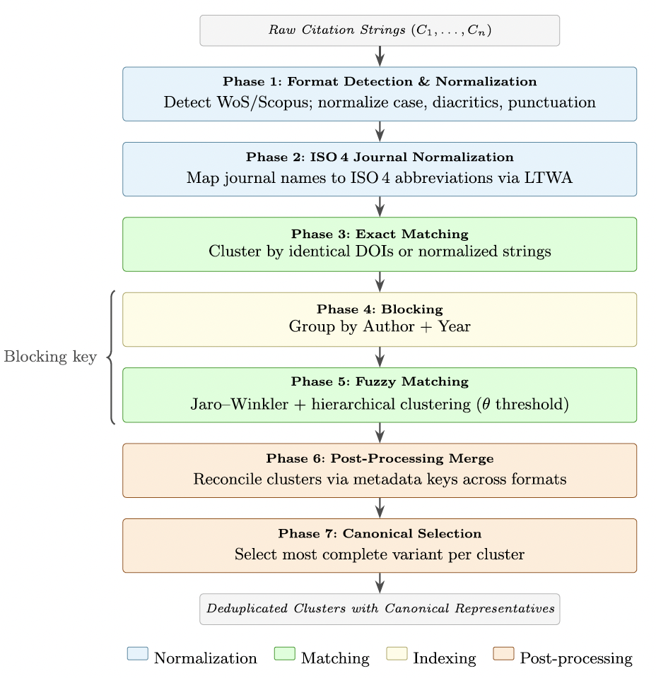

Out of the blue, in the middle of the summer holidays: our paper "A multi-phase reference matching algorithm for bibliometric analysis: design, implementation, and evaluation" is out in Scientometrics (Springer), written together with Massimo Aria and Maria Spano.
Every bibliometric indicator we compute, from the h-index to journal impact metrics and citation counts, and every science map we draw, rests on one fragile assumption: that we can tell when two cited-reference strings point to the same paper.
Often, we can't
The same article shows up as a full journal title, an ISO 4 abbreviation, a proprietary short title, or an ad-hoc truncation. Citations get split across variants, and the fragmentation silently propagates into every downstream measure. It is one of the open debates in the field, and it is rarely visible in the final numbers we all publish.
A seven-phase, unsupervised pipeline
Our paper proposes an unsupervised, seven-phase reference matching algorithm that consolidates these variants with no training data, no external APIs, and no network access.

The key contribution is that the ISO 4 List of Title Word Abbreviations (LTWA) is integrated directly into a reference-matching pipeline. Journal-name variation is the single largest source of fragmentation, and mapping both full titles and abbreviated forms onto one canonical ISO 4 form is what finally makes cross-format matching work. Our ablation study shows that the rest of the pipeline leans heavily on that single step.
What it changes on real data
The algorithm is deliberately conservative, and its effect on real Scopus data is visible exactly where it matters: cited foundational works reclaim the citations that fragmentation had scattered across variants, and co-citation structures come out less fragmented.
The Reference Matching algorithm is already implemented in the open-source bibliometrix R package and in Biblioshiny, so it is available to anyone running a science mapping analysis today.
A great achievement, reached together with Massimo Aria and Maria Spano, with the same enthusiasm and effort that has always brought us to new contributions for all the research communities.
Cite: Aria, M., D'Aniello, L., & Spano, M. (2026). A multi-phase reference matching algorithm for bibliometric analysis: design, implementation, and evaluation. Scientometrics. DOI: 10.1007/s11192-026-05763-2